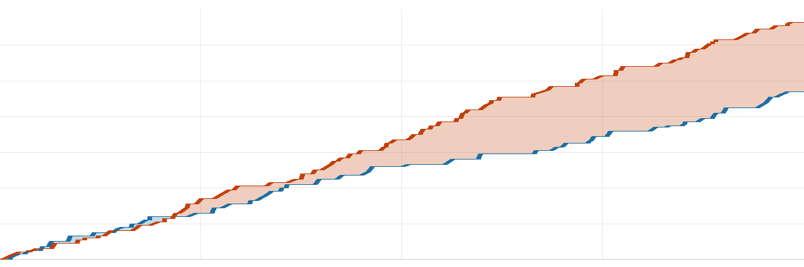

球不落·NBA 每日战报
2026-11-12美国时间
共 4 场 ｜ 每行格式：客队 比分 : 比分 主队
今天 4 场，最胶着的是活塞 144-140 奇才：交替领先 38 次，打平 18 次，打到加时才分出胜负，活塞一度落后 10 分。
焦点球星1 人
詹姆斯（未出场）76人 胜 猛龙
今日炸裂表现上榜2 人
砍下 52 分坎宁安52分5板 11助· 活塞 胜 奇才
三双 17分 11板 11助奥萨尔·汤普森17分11板 11助· 活塞 胜 奇才
今日破纪录2 条
球星2 条
坎宁安 · 生涯新高 52 分· 活塞 144-140 奇才
奥萨尔·汤普森 · 生涯首个三双· 活塞 144-140 奇才
推荐比赛2 场
夯今日最胶着
| 1 | 2 | 3 | 4 | OT | OT2 |
| 分节 | 33-32 | 31-29 | 30-29 | 27-31 | 11-11 | 12-8 |
经过 2 个加时
活塞一度落后 10 分，翻盘赢 4 分。
| 活塞 | 坎宁安52分5板11助·詹金斯21分6板·奥萨尔·汤普森17分11板11助 |
| 奇才 | 特雷·杨37分2板14助·安东尼·戴维斯30分15板4助·萨尔30分9板2助 |
|
命中率 |
三分 |
篮板 |
助攻 |
失误 |
| 活塞 |
49 | 37 | 47 | 28 | 12 |
| 奇才 |
49 | 38 | 50 | 33 | 18 |
北京 08:00 开球 ｜ 活塞 8-3 ｜ 奇才 4-9
今日最佳一球
萨尔 空中接力扣篮
活塞 144-140 奇才 · 加时 剩 3:20
夯值得看 · 交替领先 18 次
| 1 | 2 | 3 | 4 |
| 分节 | 22-28 | 28-27 | 26-17 | 20-29 |
全场交替领先 18 次、打平 6 次，太阳最后阶段才拉开 5 分。
| 黄蜂 | 科比·怀特21分3板3助·里德16分8板3助·格雷森·阿伦14分4板6助 |
| 太阳 | 布克30分1板7助·狄龙·布鲁克斯15分3板1助·吉莱斯皮13分2板1助 |
|
命中率 |
三分 |
篮板 |
助攻 |
失误 |
| 黄蜂 |
41 | 36 | 52 | 24 | 27 |
| 太阳 |
41 | 30 | 31 | 23 | 8 |
北京 10:00 开球 ｜ 黄蜂 4-8 ｜ 太阳 5-6
其余 2 场按开球时间
人上人今日最大逆转
| 1 | 2 | 3 | 4 |
| 分节 | 33-24 | 27-36 | 27-36 | 25-27 |
76人一度落后 17 分，翻盘赢 11 分。
| 猛龙 | 巴雷特31分14板5助·奎克利26分4板6助·默里-博伊尔斯14分4助 |
| 76人 | 马克西27分2板8助·恩比德20分4板3助·杰伦·布朗18分6板2助 |
|
命中率 |
三分 |
篮板 |
助攻 |
失误 |
| 猛龙 |
48 | 38 | 36 | 26 | 12 |
| 76人 |
52 | 43 | 41 | 31 | 10 |
北京 08:00 开球 ｜ 猛龙 5-7 ｜ 76人 10-3
拉完了今日最平淡
| 1 | 2 | 3 | 4 |
| 分节 | 26-34 | 26-33 | 17-36 | 25-30 |

独行侠森林狼横轴为比赛进程
森林狼最多领先 44 分，最终赢 39 分。
| 独行侠 | 里萨谢22分6板3助·纳吉·马歇尔13分1板4助·弗拉格12分7板3助 |
| 森林狼 | 海兰德24分3板8助·拉梅洛·鲍尔22分3板9助·多孙穆18分2板1助 |
|
命中率 |
三分 |
篮板 |
助攻 |
失误 |
| 独行侠 |
37 | 27 | 38 | 26 | 19 |
| 森林狼 |
58 | 47 | 50 | 33 | 17 |
北京 09:00 开球 ｜ 独行侠 7-5 ｜ 森林狼 9-3
明日焦点
勇士@马刺
北京时间 11月14日 10:30 ｜ 马刺主场
Prime Video 全美直播；NBA 杯小组赛；两边都赢得多（8胜4负 / 10胜2负）；库里、文班亚马 出战
战绩 8胜4负 / 10胜2负
另外这几场
爵士@火箭北京时间 11月14日 09:30
开拓者@国王北京时间 11月14日 11:00
明天全联盟 9 场，上述是值得关注场次
球不落 ｜ 每天一份 NBA 战报，只写场上发生的事
本文基于公开赛事数据独立撰写，与 NBA 及任何转播平台无关联。
比赛日 2026-11-12（美国时间）｜ 数据来源：ESPN